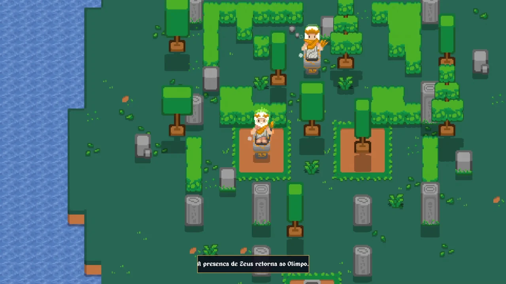

Ecos do Olimpo
Solo development of a game built from many connected systems
A 2D top-down pixel art game I'm developing solo in GameMaker. Olympus has fallen, and the player rebuilds it through gathering, crafting, grid-based building, farming, mining and automation. Alpha 0.1.2 is published and playable in the browser; the Demeter Update is in development.
- Type
- 2D top-down indie game
- Role
- Solo developer
- Status
- Public Alpha 0.1.2 · Demeter Update in development
- Tools
- GameMaker · GML · Aseprite

Problem and goal
The project's challenge
Make gathering, crafting, building, farming and automation work as a single loop — where every resource helps rebuild Olympus — while staying easy to understand for someone playing for the first time.
What the alpha had to prove
Close the core loop and put it in front of players before expanding. Is the goal clear? Are the systems easy to understand? Does progression feel rewarding? Is the interface comfortable?
My role
This is a solo project. I handle the GML programming, game design and systems design, the UI and balancing, as well as publishing: the itch.io page, the official game website and the devlogs on the FZF Dev channel.
Technologies
- GameMaker
- GML
- Aseprite
- Game Design
- HTML, CSS and JavaScript (game website)
What's in Alpha 0.1.2 (public)
- Inventory and toolbar with stackable items, stack splitting and item dropping.
- Farming with sacred seeds and multiple growth stages.
- Mining for stone, coal and Azurelite ore.
- 3×3 crafting with progression recipes.
- Furnace for refining raw materials.
- Grid-based building with structure rotation.
- Early automation with conveyor belts, chests, furnaces and auto-mining.
- Divine offerings featuring the first Zeus and Demeter sets.
- Objectives and contextual hints that guide progression.
- Portuguese and English, plus fullscreen, UI scale, camera distance and particle settings.
Technical and product decisions
- Small, frequent releases. The alpha shipped with the core loop closed and got two fixes within the same week, instead of waiting for the full game.
- Offerings as the backbone of progression. Each system produces items that feed the next, and offerings give all of them a purpose.
- Two feedback channels. Comments on the game page for general impressions and a form for bugs and detailed suggestions.
- Bilingual and configurable from the first alpha. Portuguese, English and interface and camera settings from day one.
Challenges and solutions
Placing structures precisely
In a top-down world, players need to know exactly where a machine will go before spending resources on it.
Grid-based building with a preview
Before placing, the structure shows up as a preview: green when the spot is valid, red when it isn't. The R key rotates it.
Making machines work together
Automation only makes sense if chests, furnaces and miners can pass items along without the player carrying everything by hand.
Autotiling conveyor belts
Belts automatically adapt to their neighbors and link machines into production chains that keep running while the player explores.
Too many systems for a new player
Farming, mining, crafting, building and automation all at once can leave players unsure of what to do next.
Objectives, hints and offerings
Progression is guided by objectives and contextual hints, and offerings give every resource a purpose: delivering the requested items restores the gods' sets.
Managing lots of items
A crafting game produces dozens of items, and alpha players pointed out that common genre shortcuts were missing.
Shortcuts requested by players
Version 0.1.2 added 1–9 hotbar keys, Shift + click to move items between interfaces and batch crafting, on top of TAB for the inventory and Q to drop items.
Verifiable results
Public release history, according to the devlogs on the game's page:
- Alpha 0.1 · Jun 24, 2026First public version, with the core loop and a feedback form.
- Alpha 0.1.1 · Jun 28Clearer harvesting and a fix for a bug that trapped players while building.
- Alpha 0.1.2 · Jun 30Inventory and crafting shortcuts plus an altar counter fix, based on player comments.
- Preview · OctoberA devlog showing the building overhaul and a preview of the Demeter Update.
- Alpha 0.1.2 is playable in the browser on the game's itch.io page. According to that page, the current content can be played from beginning to end.
- An official website with a gallery, roadmap, Portuguese and English versions and a waitlist.
- Development documented in devlogs on itch.io and (in Portuguese) on the FZF Dev channel.
In development
Nothing in this section is in the public build. According to the October devlog, the Demeter Update focuses on farming and vegetation — crop progression, watering and sprinklers, seed production and Demeter's forest — together with a building redesign inspired by Ancient Greece and more visual feedback on machines.
The roadmap on the official website also lists three planned updates:
- Animals and farmingSacred creatures, an automated greenhouse and an energy system.
- Pets and creaturesCompanion spirits of the gods, blessings and alchemy.
- Exploration and combatRuins, mythological monsters, bosses and the gods' lore.
What I learned
- Splitting the project into versions to ship something playable without waiting for the full game.
- Designing interdependent systems — gathering feeds crafting, which feeds building and automation — without one breaking another.
- Testing early with players: alpha comments became the to-do list for 0.1.2.
- Documenting the process in devlogs, which forces me to explain every design decision.
Gallery
Alpha 0.1.2 — public build
What anyone finds today when playing on itch.io.
Demeter Update — in development
Real screenshots from the development build, with a new character and a new look. Not released yet; they may change before launch.